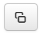

Проверка данных...
Как использовать:
- Откройте лист персонажа в Roll20
- Перенесите нужные заклинания из компендиума
- Нажмите  в левом верхнем углу листа персонажа
- Дождитесь автоматического перевода
※ Заклинания переводятся при открытии листа персонажа в отдельном окне
※ Рекомендуется перезагружать страницу после переключения листа персонажа обратно